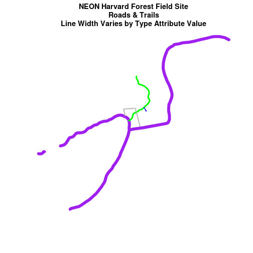
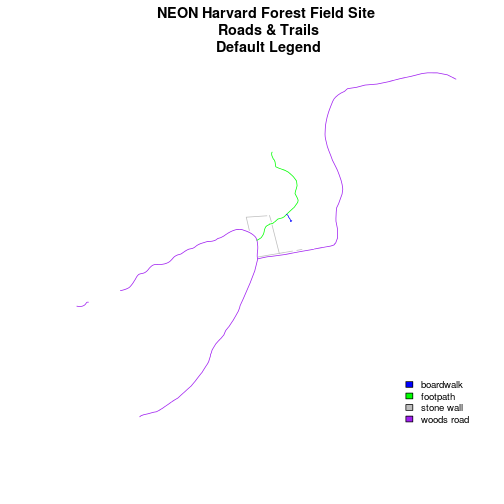
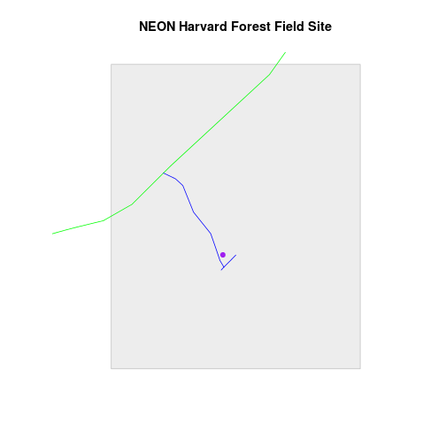
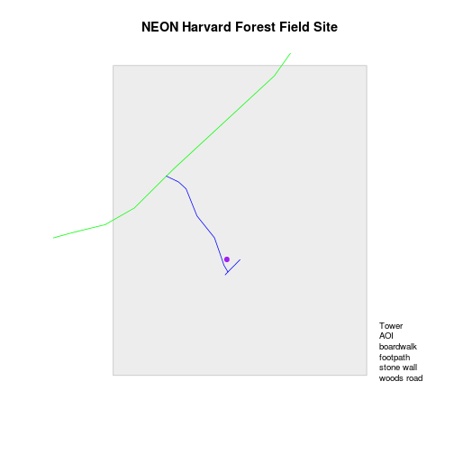
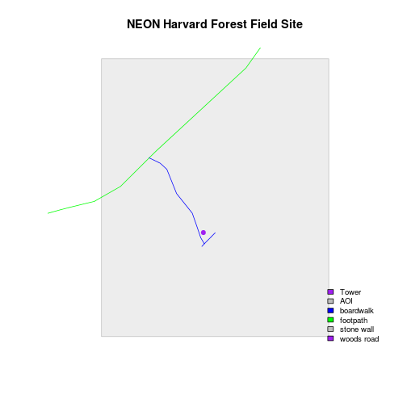
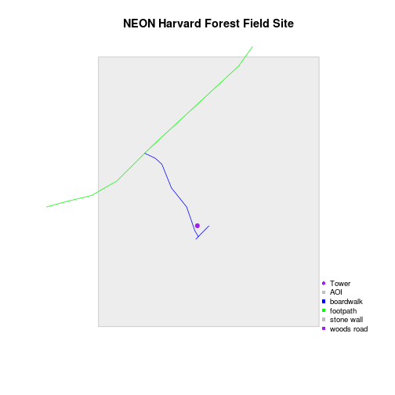
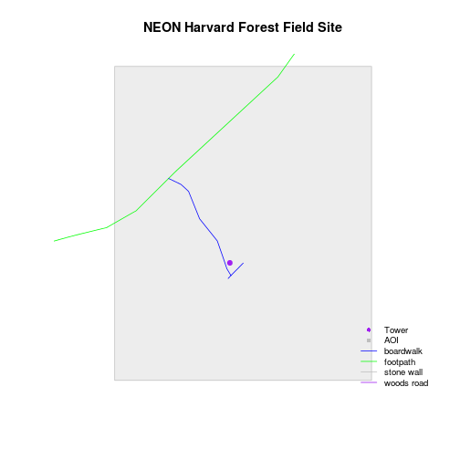
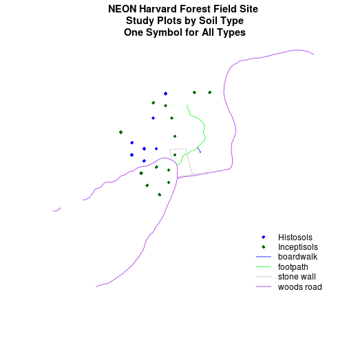
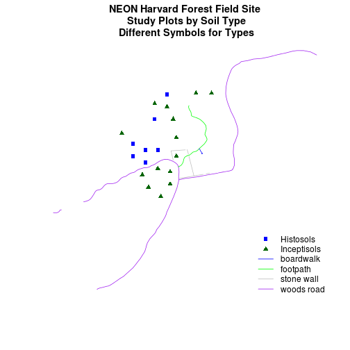

Plot Multiple Shapefiles in R
Authors
Joseph Stachelek, Leah A. Wasser, Megan A. Jones
Overview
Teaching: 10 min
Exercises: 0 minQuestions
How to create map compositions with custom legends in base plot.
Objectives
Be able to plot multiple shapefiles using base R graphics.
Be able to apply custom symbology to spatial objects in a plot in R.
Be able to customize a baseplot legend in R.
Things You’ll Need To Complete This Tutorial
R Skill Level: Intermediate - you’ve got the basics of
Rdown. You will need the most current version ofRand, preferably,RStudioloaded on your computer to complete this tutorial.Install R Packages
- raster:
install.packages("raster")- sf:
install.packages("sf")More on Packages in R - Adapted from Software Carpentry.
Download Data
This tutorial builds upon
the previous tutorial
to work with shapefile attributes in R and explores how to plot multiple
shapefiles using base R graphics. It then covers
how to create a custom legend with colors and symbols that match your plot.
Load the Data
To work with vector data in R, we can use the sf library. The raster
package also allows us to explore metadata using similar commands for both
raster and vector files.
We will import three shapefiles. The first is our AOI or area of
interest boundary polygon that we worked with in
Open and Plot Shapefiles in R.
The second is a shapefile containing the location of roads and trails within the
field site. The third is a file containing the Harvard Forest Fisher tower
location. These latter two we worked with in the
Explore Shapefile Attributes & Plot Shapefile Objects by Attribute Value in R tutorial.
# load packages
library(sf)
Linking to GEOS 3.5.0, GDAL 2.2.2, proj.4 4.8.0
library(raster)
Loading required package: sp
# set working directory to data folder
# setwd("pathToDirHere")
# Import a polygon shapefile
aoi_boundary_HARV <- st_read("data/NEON-DS-Site-Layout-Files/HARV/HarClip_UTMZ18.shp")
Reading layer `HarClip_UTMZ18' from data source `/home/travis/build/datacarpentry/r-raster-vector-geospatial/_episodes_rmd/data/NEON-DS-Site-Layout-Files/HARV/HarClip_UTMZ18.shp' using driver `ESRI Shapefile'
Simple feature collection with 1 feature and 1 field
geometry type: POLYGON
dimension: XY
bbox: xmin: 732128 ymin: 4713209 xmax: 732251.1 ymax: 4713359
epsg (SRID): 32618
proj4string: +proj=utm +zone=18 +datum=WGS84 +units=m +no_defs
# Import a line shapefile
lines_HARV <- st_read("data/NEON-DS-Site-Layout-Files/HARV/HARV_roads.shp")
Reading layer `HARV_roads' from data source `/home/travis/build/datacarpentry/r-raster-vector-geospatial/_episodes_rmd/data/NEON-DS-Site-Layout-Files/HARV/HARV_roads.shp' using driver `ESRI Shapefile'
Simple feature collection with 13 features and 15 fields
geometry type: MULTILINESTRING
dimension: XY
bbox: xmin: 730741.2 ymin: 4711942 xmax: 733295.5 ymax: 4714260
epsg (SRID): 32618
proj4string: +proj=utm +zone=18 +datum=WGS84 +units=m +no_defs
# Import a point shapefile
point_HARV <- st_read("data/NEON-DS-Site-Layout-Files/HARV/HARVtower_UTM18N.shp")
Reading layer `HARVtower_UTM18N' from data source `/home/travis/build/datacarpentry/r-raster-vector-geospatial/_episodes_rmd/data/NEON-DS-Site-Layout-Files/HARV/HARVtower_UTM18N.shp' using driver `ESRI Shapefile'
Simple feature collection with 1 feature and 14 fields
geometry type: POINT
dimension: XY
bbox: xmin: 732183.2 ymin: 4713265 xmax: 732183.2 ymax: 4713265
epsg (SRID): 32618
proj4string: +proj=utm +zone=18 +datum=WGS84 +units=m +no_defs
Plot Data
In the Explore Shapefile Attributes & Plot Shapefile Objects by Attribute Value in R tutorial we created a plot where we customized the width of each line in a spatial object according to a factor level or category. To do this, we create a vector of colors containing a color value for EACH feature in our spatial object grouped by factor level or category.
# view the factor levels
levels(lines_HARV$TYPE)
[1] "boardwalk" "footpath" "stone wall" "woods road"
# create vector of line width values
lineWidth <- c(2, 4, 3, 8)[lines_HARV$TYPE]
# view vector
lineWidth
[1] 8 4 4 3 3 3 3 3 3 2 8 8 8
# create a color palette of 4 colors - one for each factor level
road_palette <- c("blue", "green", "grey", "purple")
road_palette
[1] "blue" "green" "grey" "purple"
# create a vector of colors - one for each feature in our vector object
# according to its attribute value
road_colors <- c("blue", "green", "grey", "purple")[lines_HARV$TYPE]
road_colors
[1] "purple" "green" "green" "grey" "grey" "grey" "grey"
[8] "grey" "grey" "blue" "purple" "purple" "purple"
# create vector of line width values
lineWidth <- c(2, 4, 3, 8)[lines_HARV$TYPE]
# view vector
lineWidth
[1] 8 4 4 3 3 3 3 3 3 2 8 8 8
# in this case, boardwalk (the first level) is the widest.
plot(lines_HARV$geometry,
col = road_colors,
main = "NEON Harvard Forest Field Site\n Roads & Trails \nLine Width Varies by Type Attribute Value",
lwd = lineWidth)

Data Tip
Given we have a factor with 4 levels, we can create a vector of numbers, each of which specifies the thickness of each feature in our
sfobject by factor level (category):c(6, 4, 1, 2)[lines_HARV$TYPE]
Add Plot Legend
In the previous tutorial, we also learned how to add a basic legend to our plot.
bottomright: We specify the location of our legend by using a default keyword. We could also usetop,topright, etc.levels(objectName$attributeName): Label the legend elements using the categories oflevelsin an attribute (e.g., levels(lines_HARV$TYPE) means use the levels boardwalk, footpath, etc).fill=: apply unique colors to the boxes in our legend.palette()is the default set of colors thatRapplies to all plots.
Let’s add a legend to our plot.
plot(lines_HARV$geometry,
col = road_colors,
main = "NEON Harvard Forest Field Site\n Roads & Trails\n Default Legend")
# we can use the color object that we created above to color the legend objects
road_palette
[1] "blue" "green" "grey" "purple"
# add a legend to our map
legend("bottomright",
legend = levels(lines_HARV$TYPE),
fill = road_palette,
bty = "n", # turn off the legend border
cex = .8) # decrease the font / legend size

However, what if we want to create a more complex plot with many shapefiles and unique symbols that need to be represented clearly in a legend?
Plot Multiple Vector Layers
Now, let’s create a plot that combines our tower location (point_HARV),
site boundary (aoi_boundary_HARV) and roads (lines_HARV) spatial objects. We
will need to build a custom legend as well.
To begin, create a plot with the site boundary as the first layer. Then layer
the tower location and road data on top using add = TRUE.
# Plot multiple shapefiles
plot(aoi_boundary_HARV$geometry,
col = "grey93",
border = "grey",
main = "NEON Harvard Forest Field Site")
plot(lines_HARV$geometry,
col = road_colors,
add = TRUE)
plot(point_HARV$geometry,
add = TRUE,
pch = 19,
col = "purple")

# assign plot to an object for easy modification!
plot_HARV <- recordPlot()
Customize Your Legend
Next, let’s build a custom legend using the symbology (the colors and symbols) that we used to create the plot above. To do this, we will need to build three things:
- A list of all “labels” (the text used to describe each element in the legend to use in the legend.
- A list of colors used to color each feature in our plot.
- A list of symbols to use in the plot. NOTE: we have a combination of points, lines and polygons in our plot. So we will need to customize our symbols!
Let’s create objects for the labels, colors and symbols so we can easily reuse them. We will start with the labels.
# create a list of all labels
labels <- c("Tower", "AOI", levels(lines_HARV$TYPE))
labels
[1] "Tower" "AOI" "boardwalk" "footpath" "stone wall"
[6] "woods road"
# render plot
plot_HARV
# add a legend to our map
legend("bottomright",
legend = labels,
bty = "n", # turn off the legend border
cex = .8) # decrease the font / legend size

Now we have a legend with the labels identified. Let’s add colors to each legend element next. We can use the vectors of colors that we created earlier to do this.
# we have a list of colors that we used above - we can use it in the legend
road_palette
[1] "blue" "green" "grey" "purple"
# create a list of colors to use
plot_colors <- c("purple", "grey", road_palette)
plot_colors
[1] "purple" "grey" "blue" "green" "grey" "purple"
# render plot
plot_HARV
# add a legend to our map
legend("bottomright",
legend = labels,
fill = plot_colors,
bty = "n", # turn off the legend border
cex = .8) # decrease the font / legend size

Great - now we have a legend however this legend uses boxes to symbolize each
element in the plot. It might be better if the lines were symbolized as a line
and the points, symbolized as a symbol. We can customize this using
pch= in our legend: 16 is a point symbol, 15 is a box.
Data Tip
To view a short list of
pchsymbols, type?pchinto theRconsole.
# create a list of pch values
# these are the symbols that will be used for each legend value
# ?pch will provide more information on values
plotSym <- c(16, 15, 15, 15, 15, 15)
plotSym
[1] 16 15 15 15 15 15
# Plot multiple shapefiles
plot_HARV
# to create a custom legend, we need to fake it
legend("bottomright",
legend = labels,
pch = plotSym,
bty = "n",
col = plot_colors,
cex = .8)

Now we’ve added a point symbol to represent our point element in the plot. However
it might be more useful to use line symbols in our legend
rather than squares to represent the line data. We can create line symbols,
using lty = (). We have a total of 6 elements in our legend:
- A Tower Location
- An Area of Interest (AOI)
- and 4 Road types (levels)
The lty list designates, in order, which of those elements should be
designated as a line (1) and which should be designated as a symbol (NA).
Our object will thus look like lty = c(NA, NA, 1, 1, 1, 1). This tells R to use a
line element for`the 3-6 elements in our legend only.
Once we do this, we need to modify our pch element. Each line element
(3-6) should be represented by a NA value - this tells R to not use a
symbol, but to instead use a line.
# create line object
line_legend <- c(NA, NA, 1, 1, 1, 1)
line_legend
[1] NA NA 1 1 1 1
plotSym <- c(16, 15, NA, NA, NA, NA)
plotSym
[1] 16 15 NA NA NA NA
# plot multiple shapefiles
plot_HARV
# build a custom legend
legend("bottomright",
legend = labels,
lty = line_legend,
pch = plotSym,
bty = "n",
col = plot_colors,
cex = .8)

Challenge: Plot Polygon by Attribute
Using the
NEON-DS-Site-Layout-Files/HARV/PlotLocations_HARV.shpshapefile, create a map of study plot locations, with each point colored by the soil type (soilTypeOr). How many different soil types are there at this particular field site? Overlay this layer on top of thelines_HARVlayer (the roads). Create a custom legend that applies line symbols to lines and point symbols to the points.Modify the plot above. Tell
Rto plot each point, using a different symbol ofpchvalue. HINT: to do this, create a vector object of symbols by factor level using the syntax described above for line width:c(15, 17)[lines_HARV$soilTypeOr]. Overlay this on top of the AOI Boundary. Create a custom legend.Answers
## 1 # open plot locations plotLocations <- st_read("data/NEON-DS-Site-Layout-Files/HARV/PlotLocations_HARV.shp") # how many unique soils? Two unique(plotLocations$soilTypeOr) # create new color palette -- topo.colors palette blueGreen <- c("blue", "darkgreen") blueGreen # plot roads plot(lines_HARV$geometry, col=road_colors, main = "NEON Harvard Forest Field Site\n Study Plots by Soil Type\n One Symbol for All Types") # plot the locations plot(plotLocations$geometry, col=(blueGreen)[plotLocations$soilTypeOr], pch=18, add = TRUE) # create line object line_legendElement = c(NA, NA, 1, 1, 1, 1) line_legendElement plotSymElements <- c(18, 18, NA, NA, NA, NA) plotSymElements # create vector of colors colorElements <- c(blueGreen, road_palette) colorElements # create legend legend("bottomright", legend = c(levels(plotLocations$soilTypeOr), levels(lines_HARV$TYPE)), pch = plotSymElements, lty = line_legendElement, col = colorElements, bty = "n", cex = 1)
## 2 # create vector of DIFFERENT plot symbols plSymbols <- c(15, 17)[plotLocations$soilTypeOr] plSymbols # plot roads plot(lines_HARV$geometry, col=road_colors, main = "NEON Harvard Forest Field Site\n Study Plots by Soil Type\n Different Symbols for Types") # plot the locations plot(plotLocations$geometry, col=(blueGreen)[plotLocations$soilTypeOr], pch=plSymbols, add = TRUE) # create line object line_legendElement <- c(NA, NA, 1, 1, 1, 1) line_legendElement plotSymElementsMod <- c(15, 17, NA, NA, NA, NA) plotSymElementsMod # create vector of colors colorElements <- c(blueGreen, road_palette) colorElements # create legend legend("bottomright", legend = c(levels(plotLocations$soilTypeOr), levels(lines_HARV$TYPE)), pch = plotSymElementsMod, lty = line_legendElement, col = colorElements, bty = "n", cex = 1)
Key Points